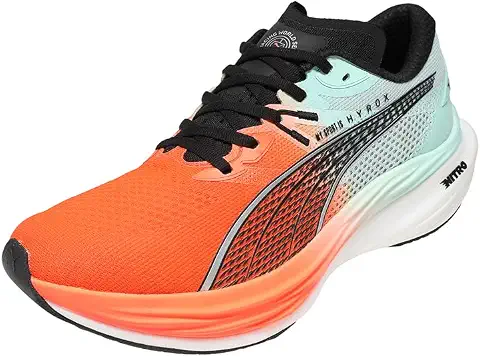
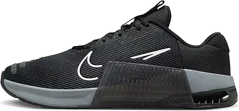
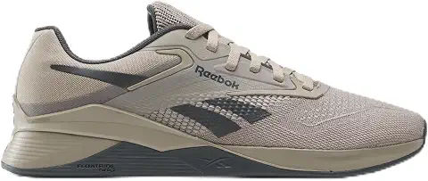
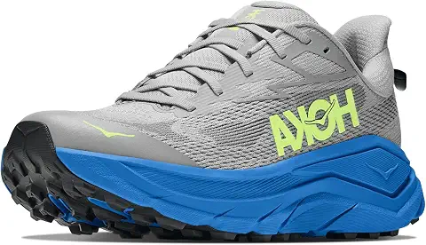
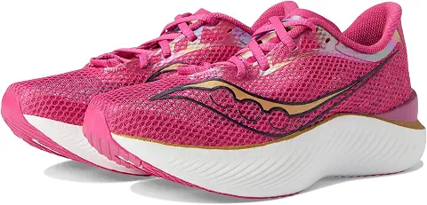

Mejores zapatillas para entrenamiento HYROX
Si entrenas HYROX con las zapatillas con las que corres 10 km, lo habrás notado: en el sled push resbalas, en los wall balls el pie baila y los tobillos se resienten. Esta guía te ayuda a elegir el calzado que corrige tu punto débil.
HYROX mezcla ocho kilómetros de carrera con ocho estaciones de fuerza, y ninguna zapatilla de running ni de gimnasio hace bien las dos cosas. Por eso la elección del calzado pesa más aquí que en otros deportes. Hemos seleccionado cinco modelos que aparecen una y otra vez en las comparativas y entre atletas de la prueba, y los hemos ordenado según para quién sirven.
Qué debe tener una zapatilla para entrenar HYROX
Antes de ver los modelos, conviene saber qué estás comprando. Hay cuatro cosas que cambian de verdad el resultado.
Estabilidad. Empujar un trineo cargado o hacer zancadas con un saco en los hombros exige un talón firme y una suela que no se hunda. Una zapatilla de running con mucha espuma blanda se tambalea justo cuando más peso llevas.
Amortiguación y retorno. Corres unos ocho kilómetros repartidos entre estaciones, con las piernas cargadas. Una suela totalmente plana, tipo crossfit, castiga mucho en esos tramos. Las zapatillas híbridas intentan quedarse en un punto medio.
Agarre. El suelo de las competiciones y de muchos gimnasios es liso. Una goma con buen dibujo marca la diferencia en el sled push y el sled pull, donde pierdes segundos si el pie patina.
Drop y peso. El drop es la diferencia de altura entre talón y antepié. Un drop bajo da más contacto con el suelo en levantamientos. Uno más alto alivia el gemelo al correr. Cuanto menos pese la zapatilla, menos te cuesta cada zancada, pero normalmente también protege menos.
Consejo: no busques la zapatilla perfecta. Busca la que compense tu punto débil. Si te hundes corriendo, prioriza amortiguación. Si te hundes en las estaciones, prioriza estabilidad.
1. PUMA Deviate NITRO 3 HYROX: la oficial para corredores rápidos

PUMA es la marca patrocinadora de HYROX, y por eso es la única que puede vender zapatillas con el nombre oficial de la competición. La Deviate NITRO 3 es su modelo de running con espuma NITRO, ligera y con buen retorno. Va dirigida a quien tiene buen motor y quiere ahorrar energía en los kilómetros de carrera.
Su punto fuerte es correr. Su punto débil, el que comparte casi cualquier zapatilla de running rápida, es que con cargas pesadas es menos estable que una zapatilla de entrenamiento funcional. Si tus estaciones van bien y pierdes tiempo corriendo, es una gran opción. Si tu base de fuerza todavía está en construcción, quizá te convenga otra.
2. Nike Metcon 9: la más polivalente

La Metcon es la referencia del entrenamiento funcional desde hace años. Tiene un talón firme, una zona de antepié flexible para saltos y desplazamientos, y un refuerzo lateral pensado para el trepado de cuerda. Para sentadillas, zancadas con peso, wall balls y farmer's carry es de las más seguras del mercado.
Lo que le falta es suavidad para correr kilómetros seguidos. Aguanta bien carreras cortas y los tramos de HYROX, pero no es la zapatilla que elegirías para una tirada larga. Para quien entrena HYROX tres o cuatro días a la semana en el gimnasio y corre poco fuera, es probablemente la compra más inteligente.
3. Reebok Nano X4: la mejor para las estaciones pesadas

La Nano es la otra gran clásica del crossfit. Tiene una base ancha y estable, un amarre firme del mediopié y un talón que no cede cuando cargas peso. Es una zapatilla cómoda para sesiones largas de fuerza, y agradece mucho el trabajo con sled y con sacos.
Como la Metcon, no está hecha para rodar. Si tus entrenamientos incluyen series de 1 km o carreras más largas, notarás que es más dura. Es una buena elección si ya haces fuerza y quieres un calzado para las ocho estaciones, y para las carreras usas otras zapatillas.
4. Hoka Mach 6: ligera, amortiguada y cómoda para correr

La Mach 6 es una zapatilla de running ligera y reactiva con una suela con mucha espuma. Entre atletas de HYROX gusta porque amortigua bien sin pesar y sin ser excesivamente blanda. El upper de malla es transpirable y se ajusta bien al pie.
Es la opción para quien tiene que acumular kilómetros de carrera en la preparación. En el gimnasio hay que ir con cuidado: la suela alta y blanda resta estabilidad en levantamientos. Mucha gente la combina con unas zapatillas de entrenamiento funcional para los días de fuerza.
5. Saucony Endorphin Pro 3: para competir y rendir al máximo

Es una zapatilla de carrera con placa de carbono. Varios atletas de élite la han usado en HYROX por su ligereza y por cómo devuelve la energía en cada zancada. Si el objetivo es bajar tiempos en los ocho kilómetros, es de las más rápidas.
Pero aquí hay que ser realistas: no es una zapatilla de entrenamiento diario. Es cara, se desgasta antes y no es estable para cargas. Tiene sentido si compites y quieres exprimir cada segundo. Para entrenar a diario, las cuatro anteriores son mejores compras.
Comparativa de un vistazo
| Zapatilla | Mejor para | Punto débil |
|---|---|---|
| PUMA Deviate NITRO 3 HYROX | Correr rápido | Estabilidad con carga |
| Nike Metcon 9 | Uso polivalente | Tiradas largas de carrera |
| Reebok Nano X4 | Estaciones pesadas | Correr kilómetros seguidos |
| Hoka Mach 6 | Acumular kilómetros | Levantamientos pesados |
| Saucony Endorphin Pro 3 | Competir | Precio y desgaste |
Cuál elegir según tu perfil
Si empiezas y quieres un solo par para todo, quédate con la Nike Metcon 9. Hace bien las estaciones, te permite correr tramos cortos y no te obliga a comprar dos pares. Es la compra que menos te va a hacer dudar.
Si vienes del running y tu punto débil son las estaciones de fuerza, mira la Reebok Nano X4 para los días de gimnasio y mantén tus zapatillas de correr para las carreras. Dos pares cuestan más, pero cada uno hace su trabajo mejor.
Si vienes del crossfit o del gimnasio y lo que te falla es el motor, las PUMA Deviate NITRO 3 o las Hoka Mach 6 te ayudarán a rodar más cómodo. Si compites en serio y ya llevas una temporada, valora las Saucony Endorphin Pro 3 para el día de la prueba. Si quieres comparar con modelos más generales de correr, tienes nuestra guía de zapatillas de running.
Errores comunes al comprar zapatillas de HYROX
- Comprar solo por la marca oficial. Que lleve el nombre HYROX no significa que sea la mejor para tu caso. La mejor zapatilla es la que corrige tu punto débil.
- Elegir placa de carbono para entrenar. Son para competir. Entrenando a diario gastas dinero en un material que se desgasta y que no te da estabilidad.
- No probar la talla. Las zapatillas de entrenamiento funcional suelen ajustar distinto que las de running. Si dudas entre dos tallas, mira las opiniones de compradores sobre la horma, y recuerda que en Amazon puedes devolver el pedido si no te encaja.
- Entrenar sin calentar. Un buen calzado no compensa un cuerpo frío. Tienes una rutina sencilla en nuestro calentamiento de 8 minutos.
Cuántos pares necesitas de verdad
Con un presupuesto limitado, un solo par de entrenamiento funcional sirve para empezar y para competir tu primera prueba. Con más presupuesto, la combinación más habitual es un par estable para fuerza y otro de running para rodar. Cuando ya compites en serio, aparece el tercer par para el día de la carrera.
Si tienes dudas sobre qué te conviene, pásate por nuestro canal de Telegram, donde publicamos ofertas de zapatillas antes de que se agoten.
Cómo cuidar tus zapatillas para que duren más
Usa un par distinto para correr en exterior y otro para el gimnasio si puedes. La arena, el asfalto y los suelos de goma desgastan la suela de forma diferente. Después de cada sesión, déjalas airearse y no las metas cerradas en la bolsa. Sécalas a temperatura ambiente, nunca sobre un radiador, porque el calor deforma la espuma y despega las piezas. Si sudas mucho, alterna dos pares durante la semana: la espuma recupera su forma entre un uso y otro y las zapatillas te duran bastante más.
Preguntas frecuentes sobre zapatillas para HYROX
¿Puedo usar zapatillas de running normales en HYROX?
Sí, y muchos principiantes empiezan así. Lo notarás en las estaciones de fuerza, sobre todo en el sled push y las zancadas, por la falta de estabilidad. Para una primera prueba es suficiente, pero si entrenas varias veces por semana merece la pena un par más estable.
¿Qué diferencia hay entre una zapatilla de crossfit y una de HYROX?
Las de crossfit priorizan la estabilidad y las de HYROX tienen que equilibrar eso con ocho kilómetros de carrera. Por eso funcionan bien tanto las híbridas como una combinación de dos pares.
¿Cuánto debo gastar en zapatillas para HYROX?
Los precios varían mucho según el modelo y la época del año. Revisa el precio en Amazon antes de decidir: con ofertas, algunas de estas zapatillas bajan bastante. Las que llevan placa de carbono suelen ser las más caras.
¿Cada cuánto hay que cambiar las zapatillas?
Depende de tu volumen de entrenamiento y del peso que muevas. Cuando la suela pierde dibujo, la amortiguación se aplana o el talón se deforma, es hora de renovarlas. En las de carrera, el desgaste llega antes.
Conclusión: elige según tu punto débil
No hay una zapatilla perfecta para HYROX, hay una que encaja con lo que te falta. Si dudas, empieza por la Nike Metcon 9 y añade un par de running cuando tu volumen de carrera lo pida. Mira el precio actualizado en Amazon antes de comprar, porque cambia a lo largo del año.